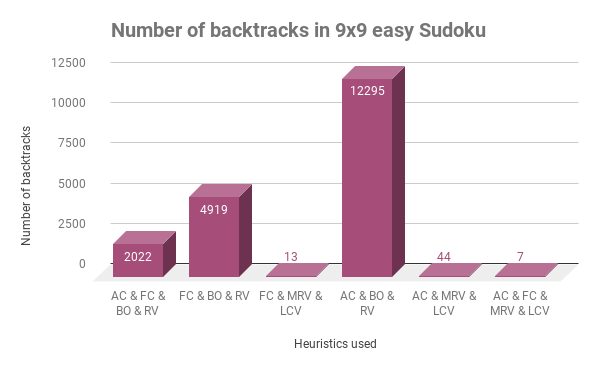
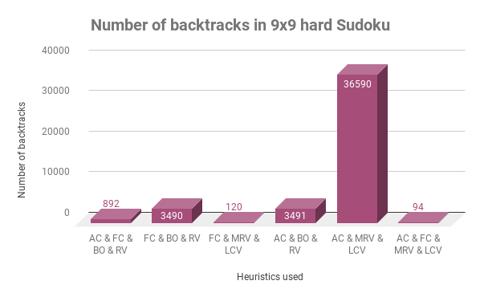
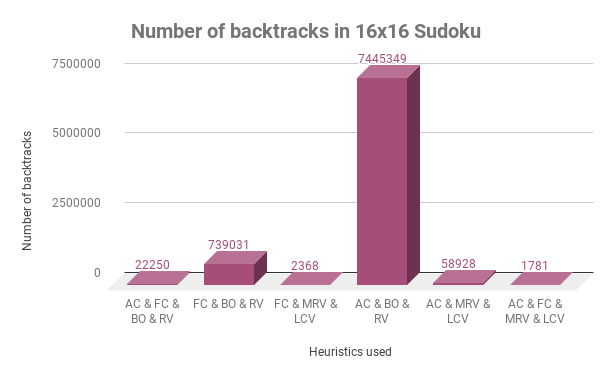

Introduction
Sudoku is one of the most well-known puzzles in the world. The standard Sudoku puzzle consists of a nine by nine grid, broken into nine three by three boxes. Each row, column and box must contain all of the numbers one through nine. Each sudoku puzzle starts with a few given values that are used as clues to fill in the rest of the numbers. The amount of numbers given determine the difficulty of the game. In our project we intend to examine combinations of different heuristics for the backtracking algorithm and check which of them yields the best results. We are looking to solve the problem with the least backtracks possible. We will measure on a 9x9 grid in two levels of difficulty and also on a 16x16 grid. Our second goal is to solve the problem using local search algorithms. We will implement random-restart hill-climbing and stochastic beam local search.
Approach and Method
In order to solve the sudoku we chose two different approaches.
The first one - modeling the sudoku as a CSP and using different heuristics to improve the search
For solving the problem when defined as a CSP problem, we used the well known backtracking algorithm.
When run without a heuristic, it takes a very long time to solve the puzzle, since the number of states is immense.
Therefore we are going to incorporate a few heuristics which will improve the performance of the algorithm drastically.
There will be heuristics for choosing the next variable, for choosing the value to assign and for detecting early failures.
The two heuristics for failure detecting that we are going to use are forward checking and arc consistency.
We will try 6 different combinations of the mentioned heuristics and check which of them yields the best result.
After that, we will turn to solve the problem using local search. Although local search may not find us a solution,
we will try to examine it and see how close we can get to the solution. First of all, we are going to randomly fill in the
rows with the numbers 1-9, ensuring that all the necessary numbers appear on the board. Then we will basically swap between
two numbers in a row, trying to get a better successor state.
To implement the random-restart hill-climbing algorithm, we will find the best successor of the current state each time,
and if we get stuck in a local minimum, we will restart the board and start over.
To implement the stochastic beam algorithm, we will first find a number of random states, and improve all of them simultaneously
while using probabilty to decide if we want to take the best successor or make a random move.
Results
In the following charts we show the results we got for running the different combinations of heuristics and strategieson on an
easy 9x9 sudoku, on a hard 9x9 sudoku and on a medium 16x16 sudoku.
Abbreviations used for the different heuristics:
AC - arc consistency
FC - forward checking
BO - by order
RV - random value
MRV - minimum remaining value
LCV - least constraining value
The results on an easy 9x9 puzzle: 
The results on a hard 9x9 puzzle:
The results on a 16x16 puzzle:
Conclusions
1. After running our program with different parameters, we concluded that using all the heuristics together
yields the best result. It is of no surprise, as combining forward checking and arc consistency helps us to detect
failure much more quickly than using each one separately.
2. We were surprised to discover that forward checking always performed better than arc consistency, even though arc
consistency is supposed to detect failures earlier.
3. In the easy 9x9 and the 16x16 the worst performance was when using arc consistency, by order and random value.
4. The random restart hill climbing algorithm solved the puzzle only once, but mostly got to 2-4 collisions. We gave it
at most 1000 restarts before giving up.
5. The stochastic beam search algorithm worked slightly better for the problem. It managed to solve the problem most of the
times, though it took quite a long time. We kept track of 7 different threads in the same state space, thus spreading out over it and
increasing our chance of reaching the solution.
Additional Information